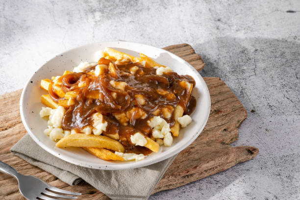

4-5 kentang besar, potong menjadi kentang goreng
1 1/2 cangkir keju curd
Minyak untuk menggoreng
Untuk kuah (gravy):
1/4 cangkir mentega
1/4 cangkir tepung serbaguna
2 cangkir kaldu sapi
1 cangkir kaldu ayam
Garam dan lada hitam secukupnya
2. Buat Kuah (Gravy): Dalam panci, lelehkan mentega di atas api sedang. Tambahkan tepung dan aduk hingga tercampur rata dan membentuk pasta (roux). Masak selama sekitar 2-3 menit.
3. Tambahkan Kaldu: Perlahan tuangkan kaldu sapi dan kaldu ayam sambil terus diaduk. Masak hingga kuah mengental, sekitar 5-7 menit. Bumbui dengan garam dan lada hitam sesuai selera.
4. Rakit Poutine: Tempatkan kentang goreng yang sudah digoreng di atas piring atau mangkuk. Taburkan keju curd di atas kentang goreng, lalu siram dengan kuah panas.
5. Sajikan: Sajikan segera agar keju curd tetap lembut dan kuahnya hangat. Nikmati poutine selagi panas.
Poutine
Bahan-bahan
Bahan-bahan:4-5 kentang besar, potong menjadi kentang goreng
1 1/2 cangkir keju curd
Minyak untuk menggoreng
Untuk kuah (gravy):
1/4 cangkir mentega
1/4 cangkir tepung serbaguna
2 cangkir kaldu sapi
1 cangkir kaldu ayam
Garam dan lada hitam secukupnya
Instruksi
1. Goreng Kentang: Panaskan minyak dalam wajan besar atau penggorengan hingga mencapai suhu sekitar 175°C (350°F). Goreng kentang dalam minyak panas hingga kecokelatan dan renyah. Tiriskan di atas kertas tisu untuk menghilangkan kelebihan minyak.2. Buat Kuah (Gravy): Dalam panci, lelehkan mentega di atas api sedang. Tambahkan tepung dan aduk hingga tercampur rata dan membentuk pasta (roux). Masak selama sekitar 2-3 menit.
3. Tambahkan Kaldu: Perlahan tuangkan kaldu sapi dan kaldu ayam sambil terus diaduk. Masak hingga kuah mengental, sekitar 5-7 menit. Bumbui dengan garam dan lada hitam sesuai selera.
4. Rakit Poutine: Tempatkan kentang goreng yang sudah digoreng di atas piring atau mangkuk. Taburkan keju curd di atas kentang goreng, lalu siram dengan kuah panas.
5. Sajikan: Sajikan segera agar keju curd tetap lembut dan kuahnya hangat. Nikmati poutine selagi panas.